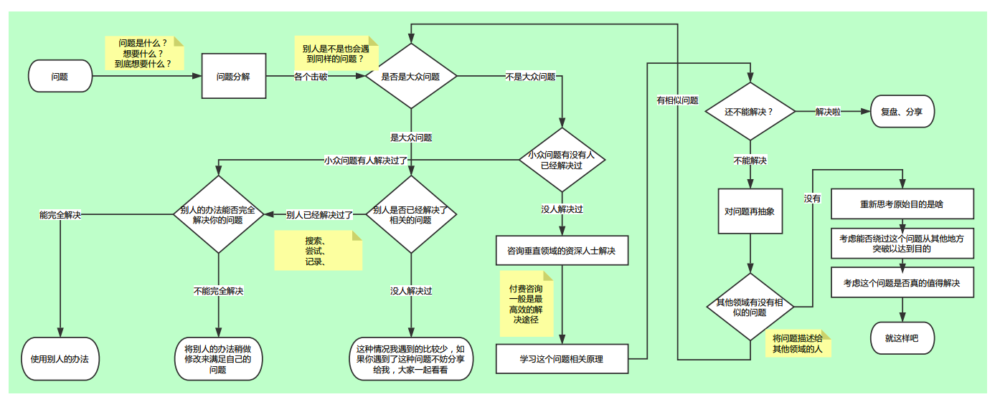
上面这张图是我在之前的工作中总结了一套解决问题的思路，可以解决自己在工作中遇到的大部分问题（可以说我解决的都是些普普通通的问题，迄今为止我并没有遇到过什么大问题..），这套思路将随着将来的思考继续优化改进，先总结一下，后面用一些实际的例子来演示一下这套思路的用法。
问题是什么
把问题问清楚，是最基本的能力。
遇到问题，先要弄清楚问题是什么，如果连问题都描述不清楚，自己肯定解决不了，别人也帮不了你。
把问题写到纸上！
问题分解
弄清楚问题的过程，也是问题分解的过程。
一个大问题，要分步骤解，不要想着一口吞下去。把问题分解成一个个小问题，然后一一击破。
把步骤写到纸上！
是否是大众问题
一个问题自己解决不了，我首先不是去想着去研究它的原理，而是这个问题是不是一种大众场景。我遇到的绝大多数问题，站在一个高手的角度看，都不是问题，也就是说我遇到的问题，都是别人已经解决过的问题了，最简单的办法就是拿来用！
别人是否已经解决了相关问题
这一步需要掌握搜索引擎的用法，一来要能访问Google，二来是问题关键字的提取。
面向Google编程，就是这个意思…很多问题，只要熟练掌握上面两项技能，都能很快解决掉。
别人的办法能否完全解决你的问题
尝试！
要多尝试，代码拷下来跑一遍看看。但不要指望代码拿过来就能用，一定要大概弄清楚代码的意思再运行，然后稍作改动，一般就能解决问题了。
如果是小众问题呢
小众问题，比如一款很小众的软件出了问题，这款人家很少有人用，这样就很难查到解决方法了。不管怎样，搜索引擎还是要搜一把，如果恰好有人解决了这个问题呢～如果没有人解决过，首先要想想看周边有没有人可能遇到同样的问题，去问问那些踩过坑的人，他们经验丰富或许可以帮上忙；如果身边没有这样的人，找一些专业的人或者专业的地方，付费提问总是最高效的办法；实在没人帮你了，你可以考虑研究下这个问题的原理并尝试解决它，然后将解决思路分享给大家。
对问题再抽象
如果你学习了原理还是无法解决这个问题，可以考虑下这个问题，在其他领域有没有类似的问题。比如2013年左右想在Android实现图片识别，需要自己开发很多东西才能完成，以我的能力是解决不了的，而且这个问题在当时也属于小众需求。我想了想，图片识别在PC领域是很常见的需求了，于是我就按照PC上skuli软件的做法自己模仿着做了个简单版的Android图片识别工具。
所以，多接触些技术，多看些技术新闻，多跟人交流，总会有收获的。
还是解决不了？
费了九牛二虎之力还是没搞定，可能需要思考一下自己的目的，能否从其他途径解决，曲线救国的道理。
或者，再仔细想一想，这个问题是不是真的有必要花这么多时间解决。
我在最近的工作中做了一个监控脚本，监控到某个条件满足后需要向一些同事发送告警邮件。监控的部分这里不涉及，只介绍一下发邮件的部分。
问题是什么
首先，我的问题是「发邮件」，「使用Python来实现邮件发送」。
问题分解
先来看下发邮件时需要支持哪些功能：
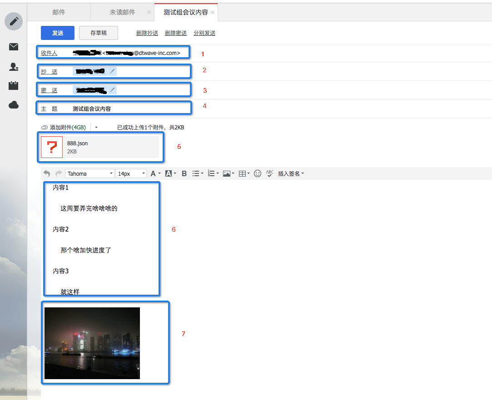
发送邮件涉及到的细节可以大致理解为下面的这张张图：
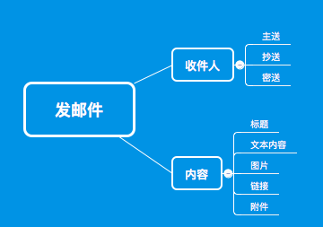
这个问题分解后，可以变成以下5个问题：
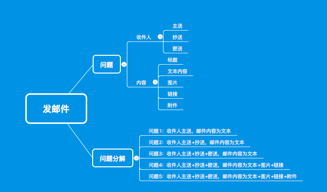
问题1： 使用Python实现邮件发送，只需要有主送的收件人，邮件内容只需要有普通的文本内容
问题1 是这5个问题中的根本，其他4个问题必须在问题1的基础上才能解决
问题2： 收件人主送+抄送，邮件内容为文本
问题3： 收件人主送+抄送+密送，邮件内容为文本
问题4： 收件人主送+抄送+密送，邮件内容为文本+图片+链接
问题5： 收件人主送+抄送+密送，邮件内容为文本+图片+链接+附件
我们先来解决『问题1』
解决问题1
是否是大众问题？
思考一下，发邮件的场景很多地方都有，而且很多系统都实现了无数遍了，所以我认为这个问题是大众问题
别人是否已经解决过了相关的问题？
通过搜索引擎搜索相关的关键字，看一看别人是不是已经解决过相关的问题了。此处的关键字应该是 Python + Email ，搜索出来的结果是：
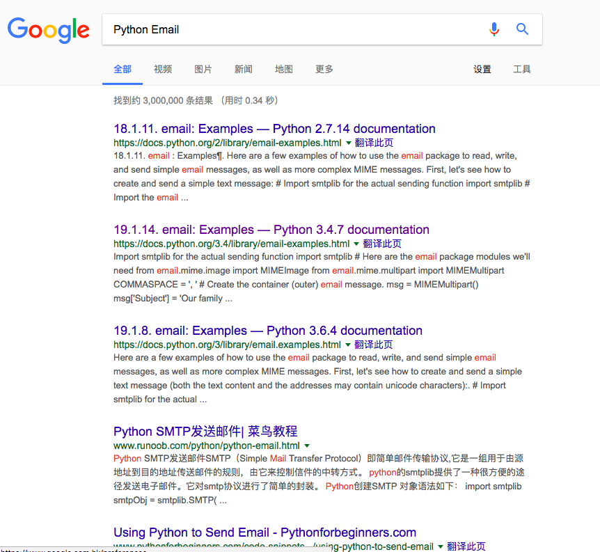
搜索出来的前3条结果，都是Python官方文档里email示例，看来官方已经有提供现成的代码了，点进去看看～（插一句，据说这年头能熟练使用Google的人已经能干翻98%的同行了）
第一个示例是:
1 | # Import smtplib for the actual sending function |
拿到这段示例代码后，要先大概看一下这段代码是怎样的一个流程，而不是直接拷贝到自己的电脑上跑一把。因为很多示例代码是需要做适当修改，比如修改某些参数值后才能在你的电脑上跑起来的，如果直接运行，很可能会运行失败，这时再回过头去查代码，还不如先熟悉一下代码再运行，出了问题也能更快速地定位。
好，先看看这段代码的流程。假设这段代码是下面这样的，没有任何注释(对于很多英语不好，刚刚入门的新人来说，这段代码有没有注释其实并没有任何区别，因为大家习惯性地逃避英文注释…):
1 | import smtplib |
对于没有注释的代码，或者看不懂注释的代码，应该怎么去读懂它？
1 | import smtplib |
首先，前两行代码，知道它引入了两个东西，先不去管这两个东西是干啥的；
1 | with open(textfile) as fp: |
然后，这两行代码，可以理解为，打开(open())了一个文本文件(变量名textfile)，然后将文件里的内容读(read())出来后做了一番操作(MIMEText())，赋值给了msg这个对象(msg=)，读到这里，我们只需要记住：msg这个对象保存了文件textfile里的相关内容即可；
1 | msg['Subject'] = 'The contents of %s' % textfile |
紧接着，这三行代码都是msg[xx]=xxx这种样子，这就可以理解为，msg可能是 Python 里dict类型的对象，这三行代码可能是在给这个dict对象里不同的key（’Subject’、’From’和’To’）赋不同的value值；
1 | s = smtplib.SMTP('localhost') |
最后这3行代码中:
s = smtplib.SMTP('localhost') 可以理解为s是某种与localhost这个host地址相关的对象；
然后s.send_message(msg)说明s这个对象可以send_message()，也就是可以发送消息，发送的消息内容可能跟之前定义的msg对象有关；
最后，s发送完消息，quit退出了。
要理解上面这3行代码，最基本的英语 ‘localhost’、’send_message’ 和 ‘quit’ 是要能看懂的，如果连这几个词都看不懂，赶紧去有道翻译里翻译一把～
好，上面的代码看完了。
要注意的是，上面的代码到目前为止其实并没有完全看懂，前两行import语句没有关注，最后的smtplib.SMTP()也没有关注，我们只是知道了代码的大概流程是：读取了一个文件里的内容，然后发送了出去。
我的经验是，读代码的过程中，只需要读懂大概就行，千万不要一行一行去死磕，不是非得把每行代码都必须看懂的。如果你为了弄清楚第一行代码
import smtplib是什么意思，你可能会去查smtplib的相关文档，然后可能还会要查smtp协议是什么个流程（smtp协议是在RFC5321）里定义的，90多页的文档，看到啥时候是个头？（当然，如果是学生时期，有大把的时间，可以去扩展下这些知识；但如果是工作中，这么做显然不够明智）
那么它能不能解决我们的问题呢？我们的问题是：「问题1：使用Python实现邮件发送，只需要有主送的收件人，邮件内容只需要有普通的文本内容」
这段代码里的收件人，在哪里？
回过头来再看这段代码，它应该是在msg['To'] = you这一行，you就应该是收件人的邮箱地址，而邮件内容应该就是textfile这个文本文件里的内容了，那么
1 | msg['Subject'] = 'The contents of %s' % textfile |
这两行表示什么呢？看它的意思，应该是邮件的标题(Subject)和发件人(From)信息
标题(Subject)好理解一些，邮件一般会有个标题；发件人(From)怎么理解呢？发邮件的不就是我自己嘛，为什么需要写发件人？想一想自己收到一封邮件时，确实是知道发件人是谁的，这里的这个发件人(From)应该就是告诉一下收件人，这是我给你发的邮件。
好，这么看，这段代码理论上是能解决我们的问题的，修改一下这段代码里的参数值，试一试：
file: test_email.py
code: Python3
1 | #coding: utf-8 |
file: test.txt
1 | 你好， |
运行结果:
1 | Traceback (most recent call last): |
运行出错了。
出现了一个新问题。
注意，我们是在解决「问题1：使用Python实现邮件发送，只需要有主送的收件人，邮件内容只需要有普通的文本内容」的过程中，遇到了一个新的问题：「问题1-1：代码运行出错」，为了解决问题1，我们需要先尝试解决一下问题1-1。
还是按照这一套解决问题的思路从头开始解决这个问题1-1
解决问题1-1
问题是什么
代码运行出错，要解决这个错误
问题分解
这个问题已经不必分解了，就是要解决错误。
但是问题的详细内容需要确认一下，这个问题具体是什么？
1 | Traceback (most recent call last): |
这段错误信息，首先打出了Traceback，即追踪信息：
1 | Traceback (most recent call last): |
追踪信息，显示的是这个错误的来龙去脉，也就是这个错误的源头是哪里，过程经历了什么，最后在哪里表现出来的。
上面的追踪信息，可以看出这个错误的源头，是文件test_email.py的第11行，最后在文件.pyenv/versions/3.4.3/lib/python3.4/encodings/ascii.py的第26行处表现出来了。
文件test_email.py是我们自己写的文件，而.pyenv/versions/3.4.3/lib/python3.4/encodings/ascii.py并不是我们自己写的。自己写的代码自己心里有数，可以查；但是别人的代码，看起来很费时间的，我的经验是不看。
我们目前只知道，错误是从这一行代码发生的：msg = MIMEText(fp.read()) ，但这一行代码可以说只有3个操作，即fp.read()、MIMETest() 和 =，这3个操作中是哪里出了问题暂时不能知道，我们再往下看。
接着，要看一下错误的信息：UnicodeDecodeError: 'ascii' codec can't decode byte 0xe4 in position 0: ordinal not in range(128) 这句话的意思，大概是代码出现了一个UnicodeDecodeError类型的错误，错误的描述是: 'ascii' codec can't decode byte 0xe4 in position 0: ordinal not in range(128)。
UnicodeDecodeError需要查一下，意思应该是Unicode解码错误，你可能不知道Unicode是什么东西，查一下，了解一下就好，它大概是一种字符集（字符集，是一种字符的集合，这个集合里保存了很多字符，这些字符包含了我们平时用到的英文、数字、汉字、标点符号甚至emoji，也就是说它是一些符号的集合），所以UnicodeDecodeError可以理解为字符解码错误。
解码又是什么意思？这个时候你可能需要额外花一些时间去弄清楚字符集和字符编码的含义，这件事绝对很有必要花时间弄清楚，但不是现在，因为你要解决的是「问题1-1：代码运行出错」，「问题1-1」已经是「问题1」的一个延伸问题了，最好不要再延伸出一个「问题1-1-1」来，工作上没有这么多时间留给你，最好的办法是找最直接的办法解决「问题1-1」，然后再花时间弄清楚底层的原理。
接着看错误的描述：'ascii' codec can't decode byte 0xe4 in position 0: ordinal not in range(128)，这句话的意思大概是：「’ascii’ 编解码器 无法 解码 字节 0xe4 在位置0处，序号 不在 range(128)范围内」。看完这个错误描述后，我们可能还是不能理解它的意思。
不过我们还是搞清楚了问题的大概内容是：读一个文件，然后做一些操作，在给某个位置的字符解码时出现错误了，而且错误的源头是在文件test_email.py的第11行。接着按照思路走～
是否是大众问题？
官方的代码，应该有很多人都运行过的，为什么我这里出了问题，别人那里肯定也出过问题吧？所以我认为它还是属于大众问题。（人称要换一下，都换成我们比较好，假设我们刚刚学会python基础）———–
别人是否已经解决过了相关的问题？
搜一下，关键字：Python + UnicodeDecodeError ，搜索结果：
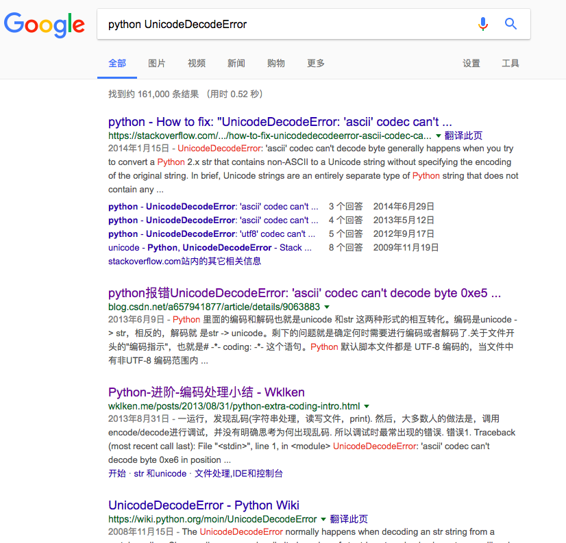
搜索结果的前2条信息似乎都跟我们的错误信息相似，先选第2条我们能看懂的，中文的文章
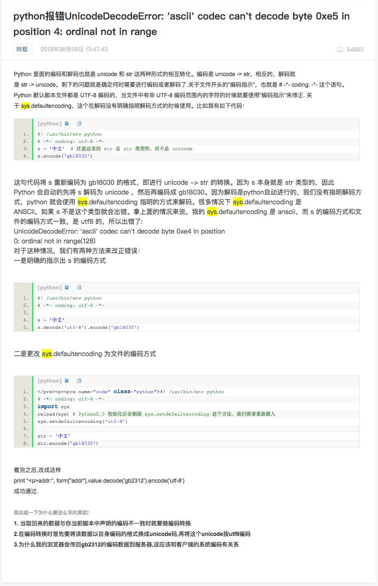
这个结果似乎并不能直接解决我们的问题，因为这篇文章里所说的问题虽然和我们遇到的问题相似，但出现的方式不一样，所以不能直接解决问题1-1。
再回头看搜索结果的第1条，英文的文章，这是stackoverflow上的问题（stackoverflow可以理解为一个针对计算机从业人员的问答网站，大家有问题可以在这上面提问，但必须用英文，而且要提出有质量的问题才行）。这篇文章貌似也不能直接解决问题1-1。
这个时候，搜索结果似乎找不到是不是有人解决过问题1-1了。别急，再加些关键字再搜索：这次，我们加一个关键字 read，搜索关键字改为 Python + read + UnicodeDecodeError，看看搜索结果：
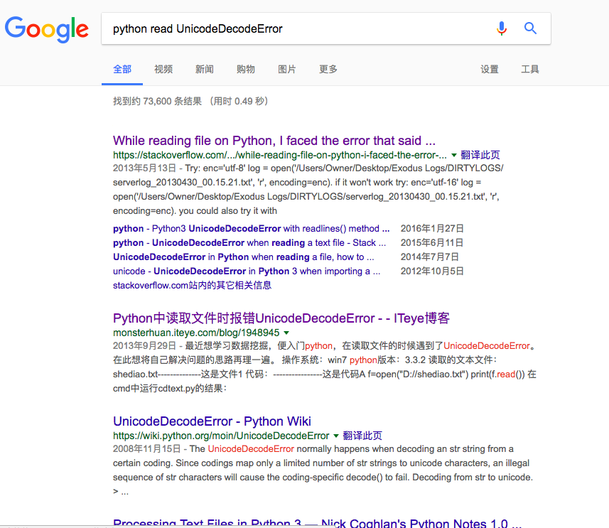
这次又了新的结果出现，我们还是先点我们能看懂的那第2条信息：
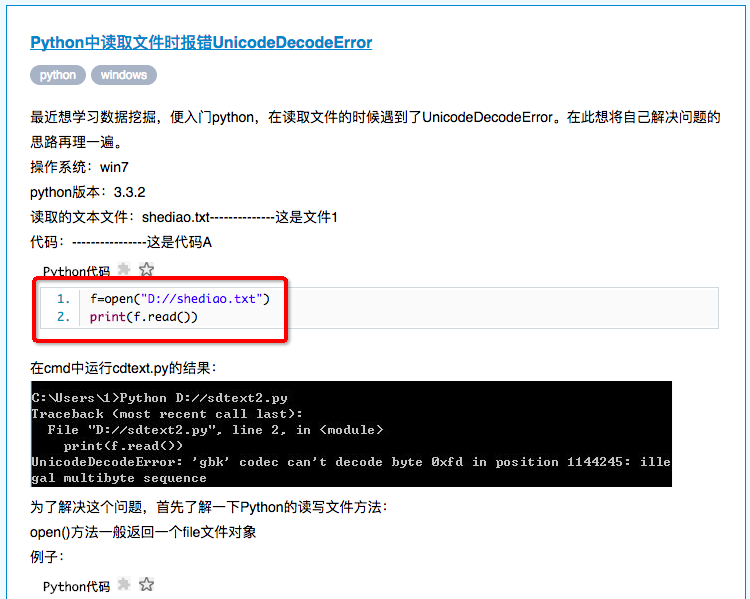
这篇文章里的代码，跟我们写的代码很相似呀，看看他是怎么解决的：
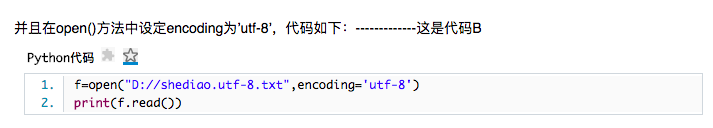
就是这里了，在open()中增加了一个参数encoding='utf-8'，我们也来试试看：
file: test_email.py
code: Python3
1 | #coding: utf-8 |
再运行一次，看看结果：
1 | Traceback (most recent call last): |
又出错了…
「辛辛苦苦查了半天资料，还是解决不了问题…」此时很多刚刚入门的新手经常会有这样的心理
这个时候，应该硬着头皮继续查，前面那么辛苦都熬过去了，再试一试吧…
定眼一看，这次的错误已经跟问题1-1的错误不一样了！这次的错误源头是文件test_email.py的第18行s = smtplib.SMTP('localhost')，也就是说，而问题1-1的错误源头是文件test_email.py的第11行，也就是说第11行的代码msg = MIMEText(fp.read())应该是没问题啦！啊…看来通过网上的方法，在open()中增加一个参数encoding='utf-8'能够解决问题1-1。
不过问题1-1解决后，又发现了一个新的问题：「问题1-2: 还是代码运行出错」！
我们按照解决问题1-1的思路，继续解决问题1-2～
解决问题1-2
问题是什么
代码运行出错，要解决这个错误
问题分解
解决的过程与问题1-1类似，不再重复写了
是否是大众问题？
是
别人是否已经解决过了相关的问题？
经过一番搜索后得知，问题1-2 的出错原因是我们需要链接一个smtp服务器，我们代码里写的这个服务器地址是localhost，也就是我们本地；但我们本地并没有搭建smtp服务器，所以我们需要找其他第三方的smtp服务器，后续的过程不再重复写了
解决的过程与问题1-1类似，不再重复写了
…
最终代码改为：
1 | #coding: utf-8 |
代码运行后没有任何报错，也没有任何返回信息，去看看有没有收到邮件？确实收到了：
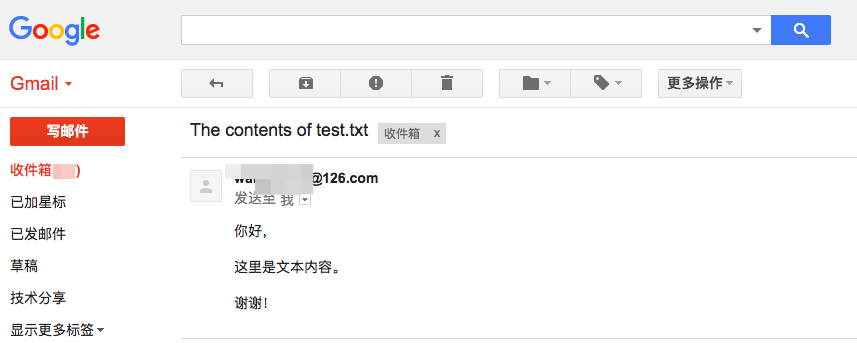
终于，「问题1-2：还是代码运行出错」也解决了，到此，「问题1：使用Python实现邮件发送，只需要有主送的收件人，邮件内容只需要有普通的文本内容」就完全解决掉了～
歇一会吧～
然后继续解决「问题2：收件人主送+抄送，邮件内容为文本」
解决问题2
其实问题2也是一个大众问题，而且已经有很多现成的代码可以参考了。不过为了演示一下我的这套思路，我们假设问题2是一个小众问题，而且没有搜索到解决方案，这就需要研究下发邮件的原理了。
学习这个问题相关原理
邮件是通过 s.send_message(msg)这一行代码发出去的，我们先看看send_message()这个方法的定义：
SMTP.send_message(msg, from_addr=None, to_addrs=None, mail_options=[], rcpt_options=[])
This is a convenience method for calling sendmail() with the message represented by an email.message.Message object. The arguments have the same meaning as for sendmail(), except that msg is a Message object.
If from_addr is None or to_addrs is None, send_message fills those arguments with addresses extracted from the headers of msg as specified in RFC 5322: from_addr is set to the Sender field if it is present, and otherwise to the From field. to_addrs combines the values (if any) of the To, Cc, and Bcc fields from msg. If exactly one set of Resent- headers appear in the message, the regular headers are ignored and the Resent- headers are used instead. If the message contains more than one set of Resent-* headers, a ValueError is raised, since there is no way to unambiguously detect the most recent set of Resent- headers.
send_message serializes msg using BytesGenerator with \r\n as the linesep, and calls sendmail() to transmit the resulting message. Regardless of the values of from_addr and to_addrs, send_message does not transmit any Bcc or Resent-Bcc headers that may appear in msg. If any of the addresses in from_addr and to_addrs contain non-ASCII characters and the server does not advertise SMTPUTF8 support, an SMTPNotSupported error is raised. Otherwise the Message is serialized with a clone of its policy with the utf8 attribute set to True, and SMTPUTF8 and BODY=8BITMIME are added to mail_options.
注意到里面的一句话：to_addrs combines the values (if any) of the To, Cc, and Bcc fields from msg，这句话的意思是 to_addrs这个参数的值是从msg这个对象的To、Cc和Bcc三个地方取出来的。我们的msg对象中，之前只填写了Subject、Frome和To 三个键的值，那是不是说我们把Cc和Bcc三个键也赋上值就可以了呢？
试试看：
1 | #coding: utf-8 |
果然可以，问题2就这样解决啦，而且顺带着连问题3也一起解决了～
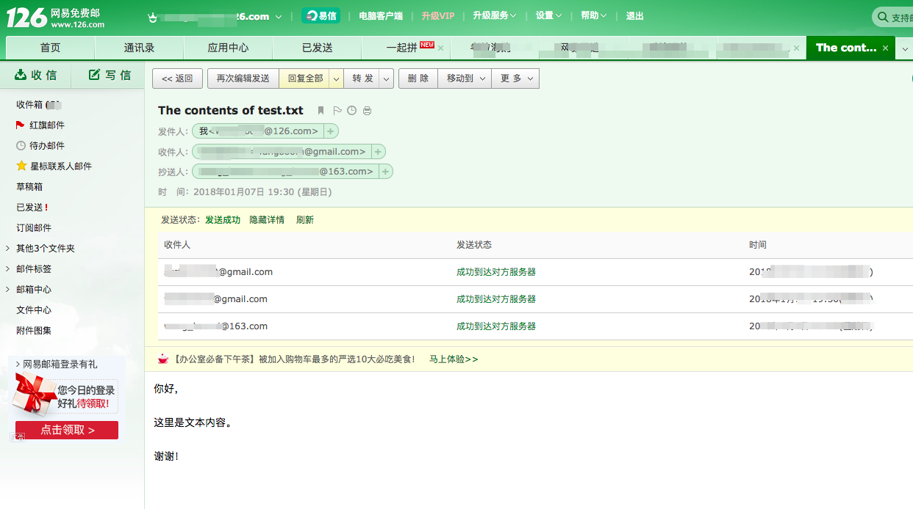
好了，接下来开始解决邮件内容的问题了，问题4: 收件人主送+抄送+密送，邮件内容为文本+图片+链接
解决问题4
我们的邮件内容是在msg里中设置的，它是一个MIMEText对象，这个类里面有没有办法添加图片呢？我们再次假设这个问题找不到现成的解决方法，再看一下它的相关原理。
1 | class email.mime.text.MIMEText(_text[, _subtype[, _charset]]) |
注意这句：the MIMEText class is used to create MIME objects of major type text，MIMEText主要是text类型的对象，那么链接、图片和附件这种可能就不能够使用MIMEText了。
那用什么呢？MIMEText是MIMENonMultipart的子类，而MIMENonMultipart是an intermediate base class for MIME messages that are not multipart，所以也不能用MIMENonMultipart。
MIMENonMultipart又是MIMEBase的子类，看看MIMEBase的描述：
1 | class email.mime.base.MIMEBase(_maintype, _subtype, **_params) |
看来MIMEBase能够满足我们邮件内容的要求，但是注意：Ordinarily you won’t create instances specifically of MIMEBase, although you could. MIMEBase is provided primarily as a convenient base class for more specific MIME-aware subclasses.，我们应该用MIMEBase的子类，而不建议直接用MIMEBase。
再找找看，哪种类还可以放下不同类型的邮件内容呢？
MIMEMultipart是符合我们要求的：
1 | class email.mime.multipart.MIMEMultipart([_subtype[, boundary[, _subparts[, _params]]]]) |
试一试：
1 | #coding: utf-8 |
我们创建一个MIMEBase类型的对象 new_msg，new_msg要代替原来MIMEText类型的msg来保存原本的文本内容，但是文本内容往哪里加呢？fp这个参数好像没地方放…
MIMEBase的内容里好像没有说怎样添加内容，那我们再往它的父类Message的文档中找:
1 | The central class in the email package is the Message class, imported from the email.message module. It is the base class for the email object model. Message provides the core functionality for setting and querying header fields, and for accessing message bodies. |
a Message object consists of headers and payloads 说明，我们刚刚创建的MIMEBase对象new_msg包含headers和payloads两个部分，The payload is either a string in the case of simple message objects or a list of Message objects for MIME container documents (e.g. multipart/* and message/rfc822)这句说明，payload为简单的内容时可以是string字符串，而在内容复杂的情况下，payload是一个list，list中的对象应该是Message对象。
这样看来，我们这个new_msg里应该是Message对象的list才行，那么接下来就要创建另一个Message对象，然后添加到new_msg的payload中就好了:
1 | new_msg = MIMEBase() |
好了，创建好text_msg和img_msg两个对象，打算把它俩加入到new_msg的payload中。不过还有问题，文本内容还是没有放到text_msg中，图片内容也没有放到img_msg中。再看文档，Message类中有一个set_payload()方法，这个方法就是设置payload的了：
1 | new_msg = MIMEBase() |
，先运行一下看代码改过后有没有出错。
OK，没问题！
Message类还有一个attach()方法就是将text_msg和img_msg两个对象添加到new_msg payload中的方法了：
1 | attach(payload) |
那我们试试attach()：